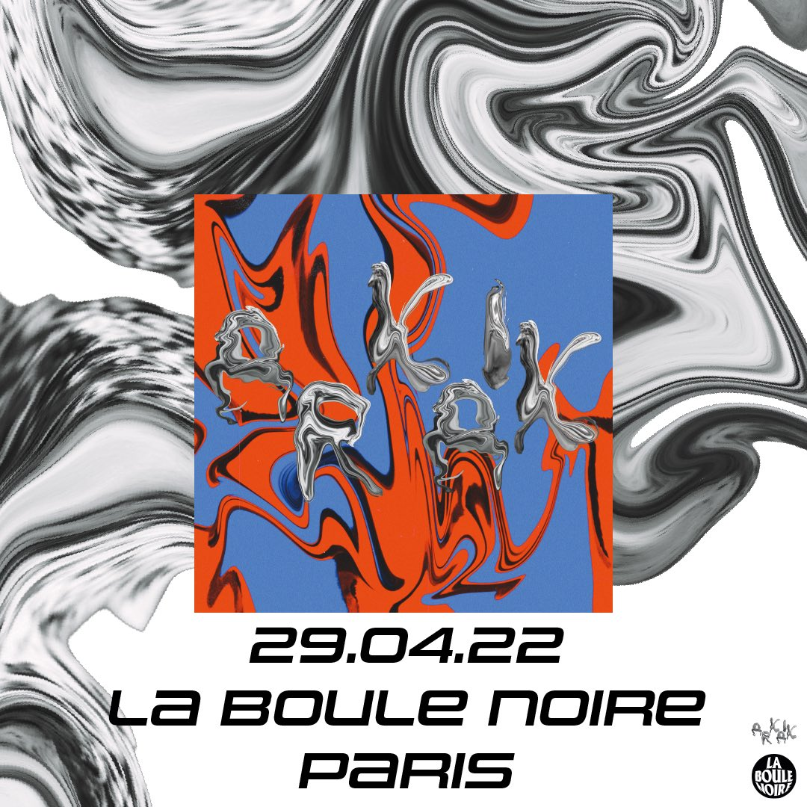
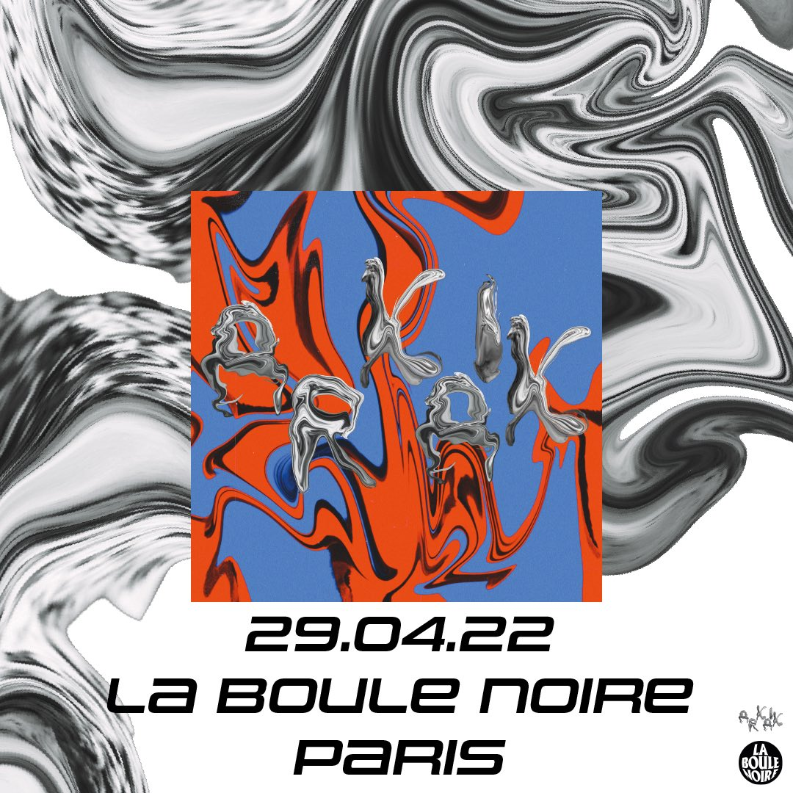

ARKAIK
La création de l’identité visuelle du groupe de musique Arkaik s’articule autour de la dualité entre tradition et modernité ainsi que la réécriture des codes visuels, à l’image des codes sonores. Des images de statues grecques en noir et blanc sont modifiées, distortées et transformées afin de créer un nouvel avatar hybride: une statue archaïque altérée par le digital.
C’est ce processus créatif que reflète le rôle de la musique analogique et la techno minimaliste, utilisant des sonorités réelles afin de les assembler, les modifier dans le but de créer une proposition moderne et innovante.
Les motifs marbrés, désormais abstraits, entrent en contraste avec les fonds de couleurs complémentaires crés à l’ordinateur en liquéfiant des formes brutes. Cette démarche de contraste de couleurs appuie encore une fois la relation ambiguë entre formes traditionnelles et altération digitale.


 
